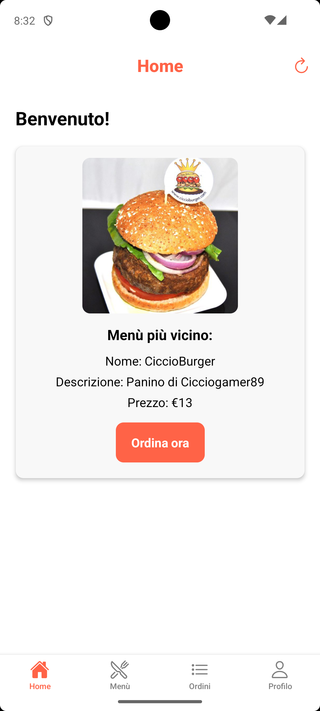

Panoramica del Progetto
Progetto completo realizzato per l'esame di Mobile Computing presso l'Università Statale di Milano. L'applicazione è stata implementata in due codebase separate con funzionalità identiche: una versione nativa per Android sviluppata in Kotlin e una versione cross-platform realizzata in React Native per iOS e Android. La versione React Native risulta più rifinita e completa dal punto di vista dell'interfaccia utente e dell'esperienza d'uso, ed è stata anche testata con successo su dispositivi iOS per garantire la compatibilità cross-platform.
L'obiettivo del progetto era sviluppare un'applicazione di food delivery simile a servizi come Deliveroo, Uber Eats e Just Eat, con una semplificazione architettonica significativa: ogni ristorante gestisce un unico menù completo anziché prodotti individuali. Questa scelta ha permesso di concentrarsi sugli aspetti core dello sviluppo mobile mantenendo la complessità gestibile.
Il docente ha fornito un server backend completo con API REST dedicate, liberando gli studenti dalla necessità di sviluppare l'infrastruttura server e permettendo di focalizzarsi esclusivamente sullo sviluppo delle applicazioni mobile. Le API fornite gestivano registrazione utenti, autenticazione, gestione menù, elaborazione ordini e tracking delle consegne.
Una caratteristica distintiva del progetto rispetto ai tradizionali sistemi di delivery è l'utilizzo simulato di droni per le consegne. Il movimento del drone viene rappresentato come un percorso rettilineo diretto tra il ristorante e la posizione dell'utente, semplificando notevolmente la logica di navigazione. Questa scelta progettuale ha permesso di evitare l'implementazione complessa del sistema di mappe e pathfinding di Google, concentrando lo sviluppo sulle funzionalità core dell'applicazione mobile.
üìÇ Codice Sorgente
Il codice completo di entrambe le implementazioni è disponibile nelle rispettive repository GitHub:
üéì Modalit√† d'Esame
L'esame consisteva in una prova pratica in aula dove gli studenti dovevano implementare nuove funzionalità o modifiche al codice esistente in tempo reale. Questa modalità valutava la capacità di problem-solving, la conoscenza approfondita del codice sviluppato e l'abilità di adattamento sotto pressione. Le modifiche richieste durante l'esame non sono incluse in questa documentazione, che presenta la versione base del progetto.
Tecnologie Utilizzate
Aspetti Tecnici e Implementazione
üîí Sistema di Pagamento
Il sistema implementa una validazione simulata dei dati di pagamento. Gli utenti inseriscono i dettagli della carta di credito nel profilo (numero carta, scadenza, CVC) con validazione che verifica esclusivamente la correttezza del formato del numero carta (16 cifre). Tutti i dati di pagamento sono sempre modificabili dalla sezione profilo.
üìç Geolocalizzazione Intelligente
L'app utilizza un sistema di geolocalizzazione ottimizzato che acquisisce la posizione dell'utente all'avvio, durante l'effettuazione dell'ordine e in altri momenti chiave, evitando richieste eccessive. Importante: l'indirizzo di consegna viene fissato al momento dell'ordine e non si aggiorna se l'utente si sposta successivamente, garantendo la consegna nella location prevista.
üë§ Validazione Profilo Completa
Il profilo utente richiede la compilazione obbligatoria di tutti i campi: Nome, Cognome, Nome/Cognome del titolare carta, Numero carta (16 cifre), Mese e Anno di scadenza, CVC. L'applicazione blocca qualsiasi tentativo di ordinazione finché tutti questi dati non sono correttamente inseriti, garantendo informazioni complete per la consegna e il pagamento.
üì¶ Gestione Stati Ordine
Il sistema implementa una gestione semplificata degli ordini con solo due stati: 'In Consegna' e 'Consegnato'. Gli ordini non possono essere cancellati o modificati una volta effettuati, simulando un processo di consegna realistico. Il sistema permette un solo ordine attivo alla volta per utente.
üó∫Ô∏è Google Maps e Geocoding
L'applicazione integra Google Maps API per la visualizzazione delle mappe di tracking e Google Geocoding API per convertire le coordinate geografiche (latitudine/longitudine) in indirizzi leggibili per l'utente.
Confronto tra le Implementazioni
⚡ React Native vs Kotlin: Differenze nella Qualità
Come evidente dal confronto visivo delle interfacce, la versione React Native presenta una qualità superiore in termini di design e fluidità. Un aspetto importante è che la versione React Native non presenta grossi bug visibili, mentre la versione Kotlin aveva ancora alcuni bug più evidenti che non sono stati risolti. Questa differenza è dovuta a diversi fattori:
üöÄ Familiarit√† con JavaScript
React Native, basato su JavaScript, è stato più facile da sviluppare sia per la sintassi più intuitiva sia perché avevo già utilizzato JavaScript in passato. Questo ha permesso di concentrarmi di più sulla logica dell'applicazione piuttosto che sulla comprensione del linguaggio.
⏰ Tempistiche di Sviluppo
Alla versione React Native è stato dedicato più tempo di sviluppo, influenzato anche dai vincoli di altri esami universitari in corso e dal periodo in cui ho sostenuto l'esame. Inoltre, React Native è stata la prima delle due versioni che ho sviluppato, il che mi ha dato più tempo per rifinirla.
üéØ Preferenza Personale
Personalmente mi è piaciuta di più lavorare con React Native, il che si riflette nella qualità finale del prodotto. Non era mia intenzione iniziale creare una versione migliore dell'altra, ma il maggiore interesse e coinvolgimento hanno naturalmente portato a un risultato più curato.
Timeline del Progetto
Periodo: Marzo 2025 - Settembre 2025
Durata: Progetto accademico sviluppato nell'arco di 7 mesi
Interfaccia e Navigazione
Home Page
React Native
Kotlin Android
All'apertura dell'app, l'utente si trova nella home page dove viene mostrato il menù più vicino alla sua posizione. Sono presenti un'immagine del ristorante, informazioni essenziali come prezzo e tempo di consegna, e un pulsante per procedere all'acquisto. La navigazione avviene tramite una navbar in basso con 4 sezioni: Home, Menù, Ordini e Profilo.
Tracking Consegna
React Native
Kotlin Android

Quando è presente un ordine in corso (il sistema permette un solo ordine alla volta), la home si trasforma in una mappa di tracking della consegna. Vengono mostrate informazioni cruciali come il tempo stimato di arrivo, l'indirizzo di consegna e un riepilogo di ciò che è stato ordinato.
Pagina Menù
React Native
Kotlin Android
La sezione Menù presenta un elenco completo di tutti i ristoranti disponibili, ordinati per vicinanza alla posizione dell'utente. La versione Kotlin include anche un'anteprima fotografica di ogni menù, mentre React Native mantiene un design più minimalista. Ogni ristorante è presentato con informazioni essenziali per facilitare la scelta.
Dettaglio Menù e Acquisto
React Native
Kotlin Android
Selezionando un ristorante, si accede alla pagina di dettaglio che presenta un'immagine ingrandita del menù, informazioni complete sul ristorante (tempi di consegna, prezzo, descrizione) e un pulsante per procedere all'acquisto. Questa schermata fornisce tutti i dettagli necessari per prendere una decisione informata.
Monitoraggio Consegna Attiva
React Native
Kotlin Android
Dopo aver confermato l'acquisto, l'applicazione reindirizza automaticamente alla schermata di monitoraggio della consegna attiva. La mappa visualizza due punti chiave: la posizione corrente dell'utente e la posizione del drone addetto alla consegna, fornendo un tracking in tempo reale del progresso dell'ordine insieme ai dettagli dell'ordine effettuato.
Storico Ordini
React Native
Kotlin Android
La sezione Ordini presenta uno storico cronologico completo di tutte le ordinazioni dell'utente. Gli ordini sono contrassegnati con stati chiari ('In Consegna' o 'Completato'), con l'eventuale ordine in corso evidenziato in cima alla lista. Selezionando un ordine specifico, l'utente può accedere alla relativa schermata di tracking o ai dettagli della consegna completata.
Consegna Completata
React Native
Kotlin Android
Per gli ordini completati, la schermata di riepilogo mostra una mappa semplificata con un singolo marcatore che indica il punto di consegna finale. Questa visualizzazione conferma il completamento dell'ordine e fornisce una conferma visiva della location di consegna effettiva.
Gestione Profilo Utente
React Native
Kotlin Android
La sezione Profilo contiene tutti i dati personali dell'utente necessari per il processo di ordinazione. La compilazione completa del profilo è un requisito obbligatorio: senza informazioni complete, l'applicazione impedisce l'effettuazione di qualsiasi ordine, garantendo così che tutti i dati necessari per la consegna siano disponibili.
üîå API Backend Utilizzate
Documentazione completa delle API REST fornite dal docente per l'integrazione backend dell'applicazione:
POST /user
Registrazione nuovo utente (restituisce SID e UID)
GET /user/febbraio2/{uid}/completedOrders
Recupero storico ordini completati
GET/PUT /user/{uid}
Gestione informazioni profilo utente
GET /order/{oid}
Stato e dettagli ordine (tracking drone)
POST /menu/{mid}/buy
Acquisto menù selezionato
GET /menu
Lista menù ordinati per vicinanza
GET /menu/{mid}
Dettagli specifici menù
GET /menu/{mid}/image
Immagine menù (base64)